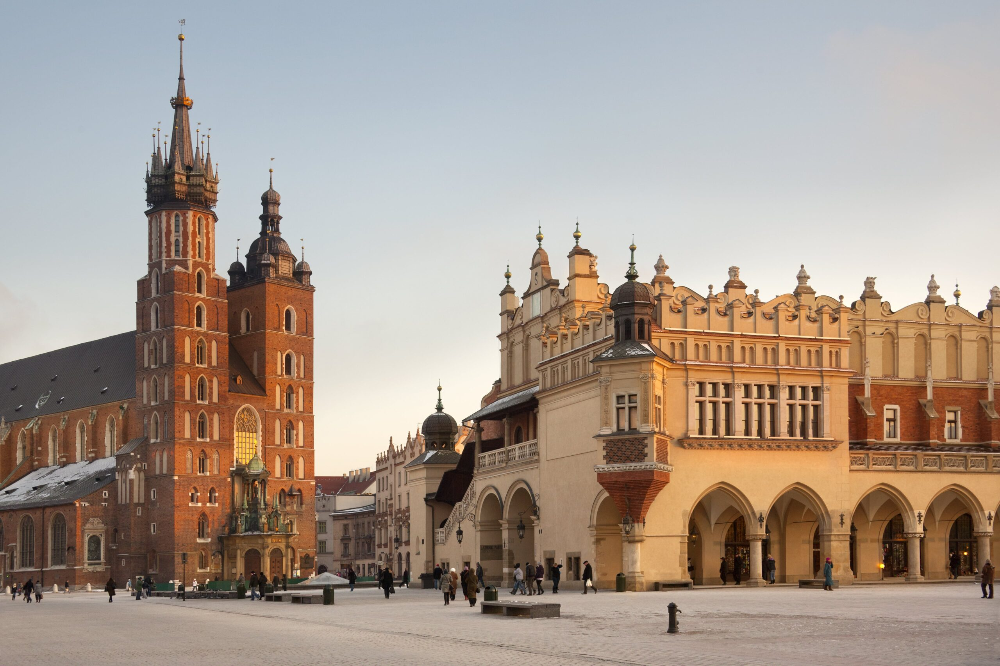
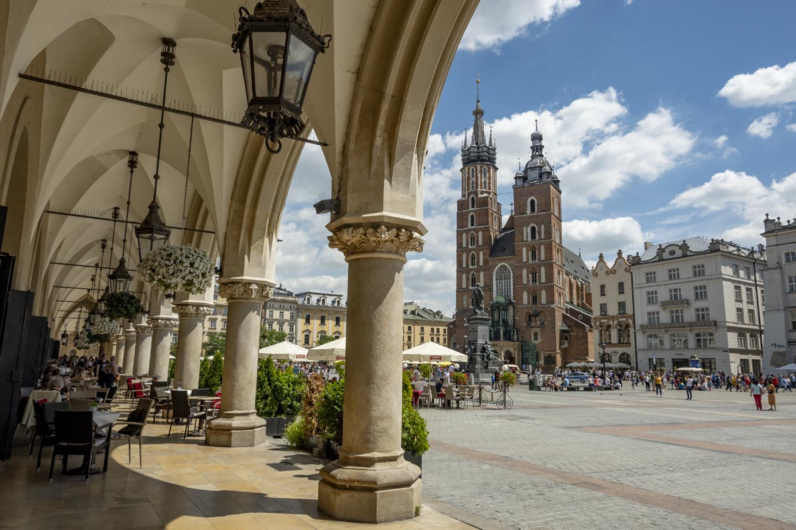

Kraków
Rzym ::: Kraków ::: Berlin

Stołeczne Królewskie Miasto Kraków – miasto na prawach powiatu położone w południowej Polsce nad Wisłą, drugie co do liczby mieszkańców. Formalna stolica Polski do 1795 r. i miasto koronacyjne oraz nekropolia królów Polski. Od 1000 r. nieprzerwanie stolica diecezji krakowskiej (jednej z pięciu w ówczesnej Polsce), a od 1925 r. archidiecezji i metropolii. Lokowany przed 1228 r., ponownie w 1257 r. Od odzyskania niepodległości w 1918 r. miasto wojewódzkie (od 1999 r. siedziba władz województwa małopolskiego), jest także centralnym ośrodkiem metropolitalnym aglomeracji krakowskiej i Krakowskiego Obszaru Metropolitalnego. Kraków jest stolicą historycznej Małopolski. Leży na obszarze Bramy Krakowskiej, Niecki Nidziańskiej i Pogórza Zachodniobeskidzkiego.
Zamek Królewski na Wawelu

Na terenie zamku podczas wykopalisk archeologicznych stwierdzono istnienie już w XI wieku dużej liczby obiektów murowanych, także o charakterze rezydencjonalnym. Taką funkcję mogła pełnić tzw. sala o 24 słupach, którą określa się jako palatium. Większy zamek obronny zbudowano na przełomie XI i XII wieku w północno-wschodnim narożniku wzgórza. Było to skutkiem przeniesienia stolicy Polski do Krakowa. Rezydencja, wzniesiona w stylu romańskim, składała się co najmniej z czworokątnej wieży obronnej przy Kurzej Stopce i budynku mieszkalnego. Oprócz tego znajdowały się w pobliżu liczne budynki sakralne. Na wschód od wąwozu, dzielącego wówczas wzgórze, Wawel okrążono pierścieniem murów i dobudowano kolejne obiekty. Zespół ten nazwano zamkiem wyższym. Na zachód od wąwozu wznosił się tzw. zamek niższy, będący osadą przygrodową. W jego wale, powstałym po 1016 roku, wzniesiono murowaną przedromańską szyję bramną w rejonie Smoczej Jamy
Bazylika Mariacka

Kościół archiprezbiterialny Wniebowzięcia Najświętszej Marii Panny, zwany także bazyliką Wniebowzięcia Najświętszej Marii Panny, bazyliką Mariacką lub kościołem Mariackim – zabytkowy, rzymskokatolicki kościół parafialny, znajdujący się w Krakowie, w dzielnicy I Stare Miasto, na Starym Mieście, na placu Mariackim, przy północno-wschodnim narożniku Rynku Głównego. Od 1962 roku posiada tytuł bazyliki mniejszej. Świątynia jest gotycką, trójnawową, orientowaną bazyliką.
Stare Miasto w Krakowie

Dla centrum Krakowa ograniczonego Plantami powszechnie używa się nazwy Stare Miasto. Jest to kolokwializm, nazwa nieformalna. Obszar ten nigdy tak się oficjalnie nie nazywał. Do roku 1954 Stare Miasto w obrębie Plant (bez wawelskiego wzgórza) stanowiło odrębną dzielnicę katastralną. Była to dzielnica I Śródmieście. W 1978 Stare Miasto wraz z Wawelem, Kazimierzem i Stradomiem zostało wpisane na listę światowego dziedzictwa UNESCO, w 1994 razem z Wawelem, Stradomiem, Kazimierzem, Podgórzem, Nowym Światem i Piaskiem zostało uznane za Pomnik historii. Głównymi zabytkami krakowskiego Starego Miasta są znajdujące się na Rynku Głównym oraz w jego okolicy: kościół Mariacki na Placu Mariackim, Sukiennice i wieża ratuszowa, oraz pozostałości murów obronnych – Brama Floriańska i Barbakan.